INTRODUCTION
Today we are assembling a 4-wheel robot base. You will learn about:
- Buck Converter Basics
- Electronic Connections
- L298N Motor Driver
- How it works
- Pin functions
- ESP32 Basics
- Bluetooth Control for the Car
- Servo Motor
- What it is
- How to control it
1.0 List of Components
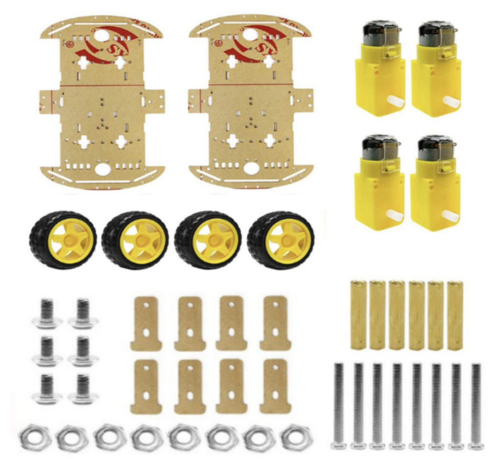
- Car Base
- 2 x chassis
- 4 x wheel
- 4 x TT Motor
- 8 x M3*30 Screw
- 8 x Fastener
- 6 x M3*8 Screw
- 8 x M3 Nut
- 6 x L30+6 F-F Standoffs
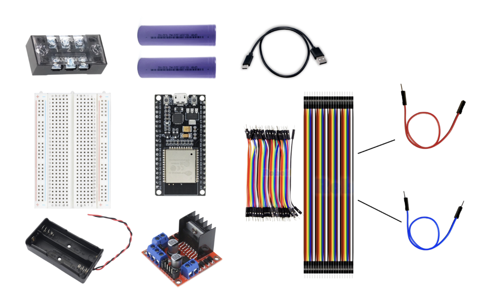
- Electronics
- 1 x Terminal Block
- 1 x Breadboard
- 1 x Battery Holder
- 2 x 18650 Rechargeable Batteries
- 1 x ESP32-WROOM-32 (38 Pins)
- 1 x L298N Motor Driver
- 1 x USB-A to Type-C Cable
- 1 x 10 cm Female-Male Jumper Wires
- 1 x 20 cm Female-Male Jumper Wires
- 1 x 10 cm Male-Male Jumper Wires
- 1 x 20 cm Male-Male Jumper Wires
- Equipment
- 1 x Precision Screwdriver Set
1.1 Steps of Assembly of Car Base
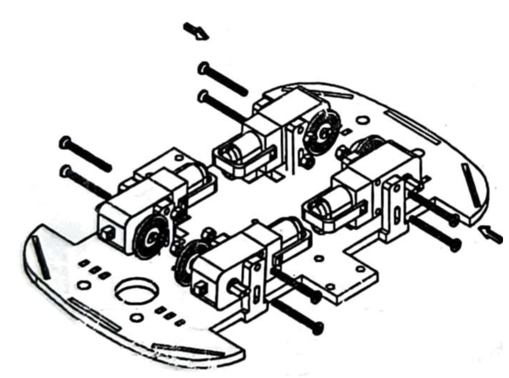 Step 1: Insert the fasteners and fix the motors to the chassis one by one, then tighten the screws and nuts. Attention:
|
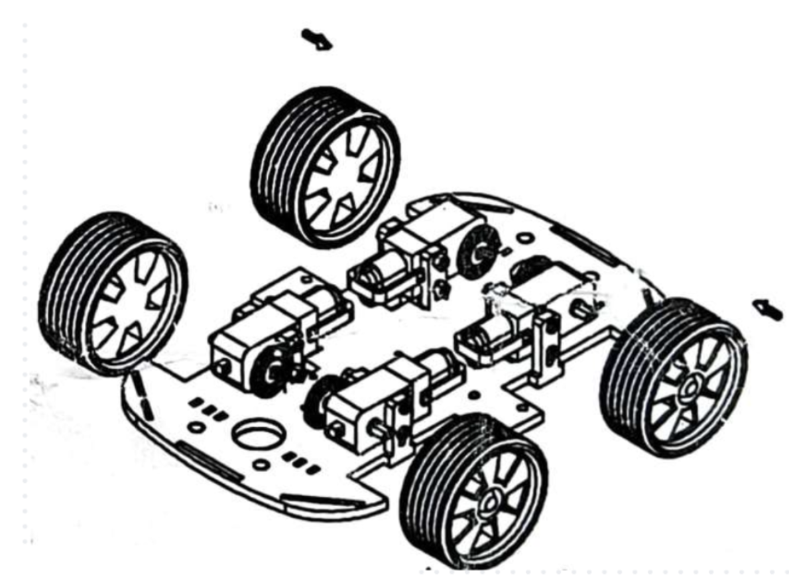 Step 2: Hold the chassis tightly and insert the wheels to the motors. |
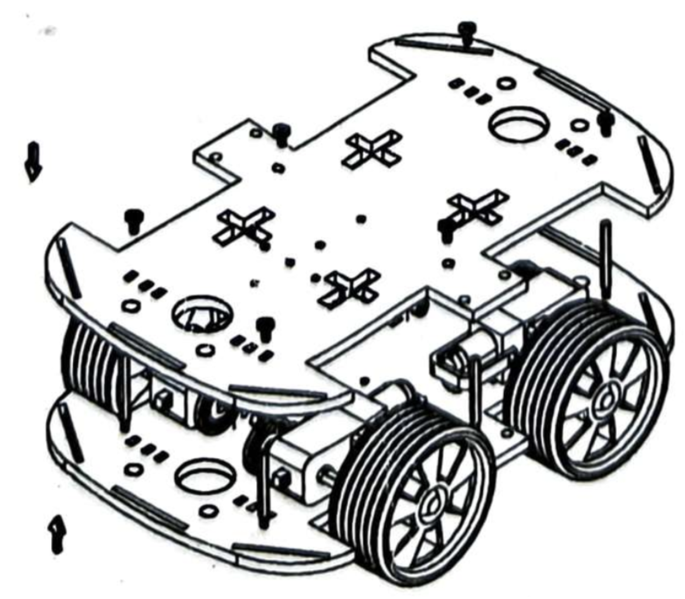 Step 3: Insert the standoffs, tighten them with screws from the bottom, then with screws from the upper side. Installation is then completed. |
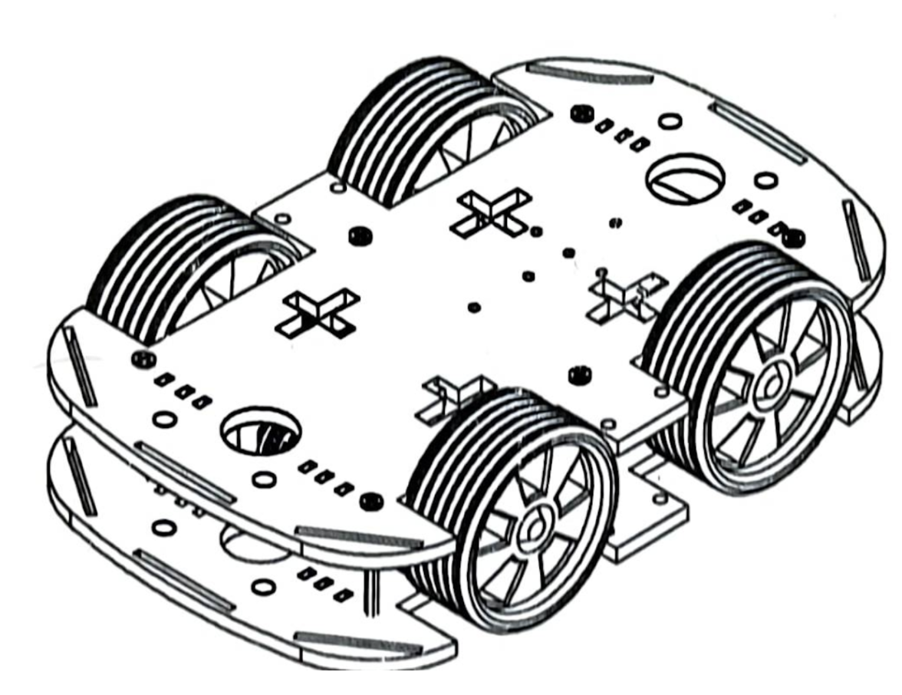 Completed installation. |
1.2 Overall Schematics
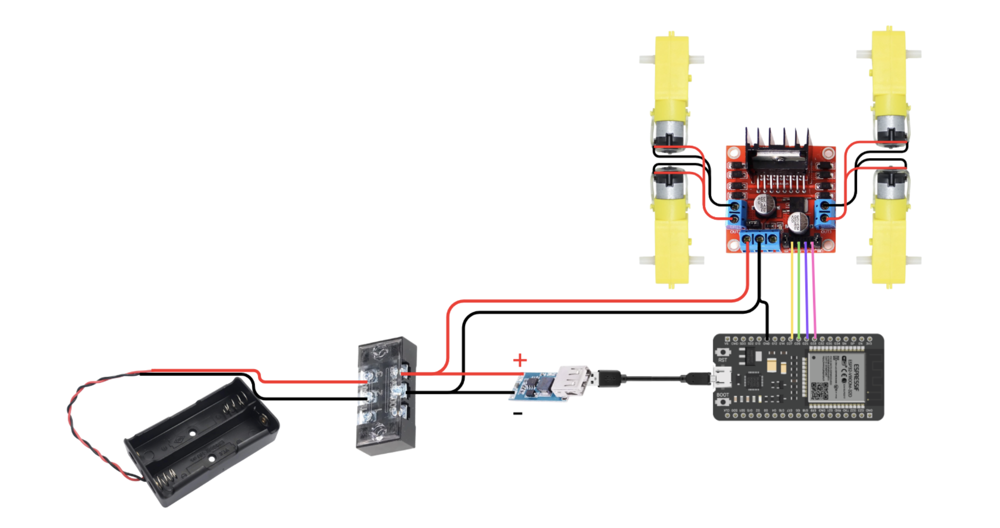
SYSTEM FLOW DIAGRAM
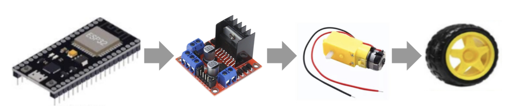
ESP32 → Motor driver → Motor→ wheels
1.3 Buck Converter
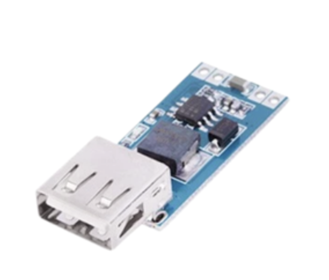
What is a Buck Converter?
A buck converter is a DC-to-DC power supply that reduces a higher input voltage to a lower output voltage.
*Direct Current (DC): electric current that flows in one direction only.
Why we need it:
- Two 18650 batteries in series provide 7.4V nominal (up to 8.4V fully charged), but the ESP32 only operates at 3.3V–5V.
- A buck converter steps down the voltage safely to 5V, preventing damage.
- It provides stable voltage, avoiding resets, and efficiently supplies the required current.
5V Fixed USB Buck Converter
- Input voltage: DC 7.5 - 28V
- Fixed Output Voltage: 5.0V DC
- Output Current: 2A Continues (3A peak)
Conenction Diagram
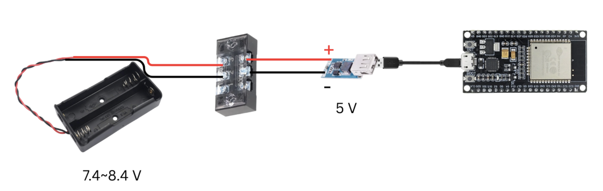
1.4 L298N Motor-Driver
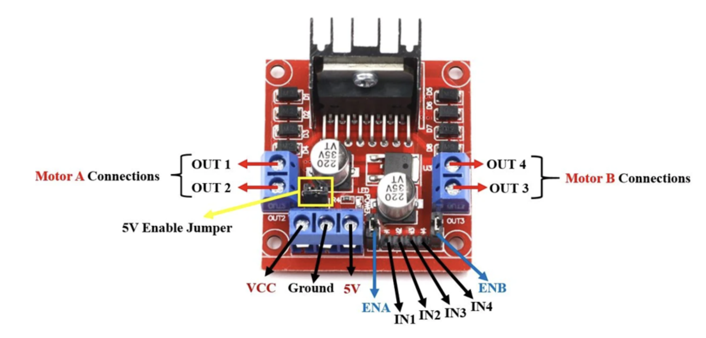
1.4.1 Output Terminals (OUT1, OUT2, OUT3, OUT4)
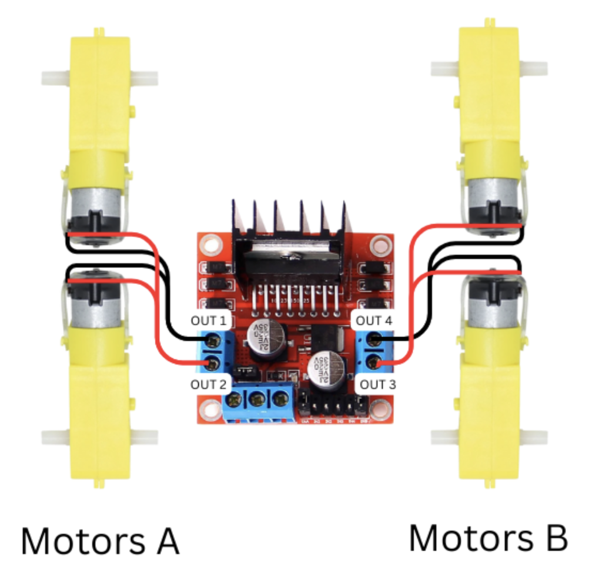
| Motors A (Left Side) | Motors B (Right Side) |
|---|---|
|
|
*NOTE: Ensure that for both Motors A and B, each output terminal has the red wires paired together and the black wires paired together. DO NOT mix positive and negative wires in the same terminal.
1.4.2 Power Pins (VCC, GND, 5V)
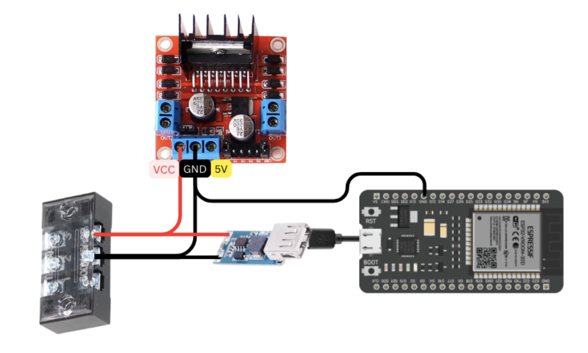
| VCC (+12V) |
*NOTE: However, TT motors receive slightly less voltage than supplied to VCC. To learn more: Power Pins - Last Minute Engineers |
|---|---|
| GND |
*NOTE: Common ground connecting the ESP32 and battery is required for the signals to function correctly. |
| 5V |
*NOTE: This pin can usually be ignored, as the driver is able to draw power from VCC and automatically provides 5V to the logic circuits. To learn more: On-board 5V Regulator and Jumper - Last Minute Engineers |
1.4.3 Direction Control Pins (IN1, IN2, IN3, IN4)
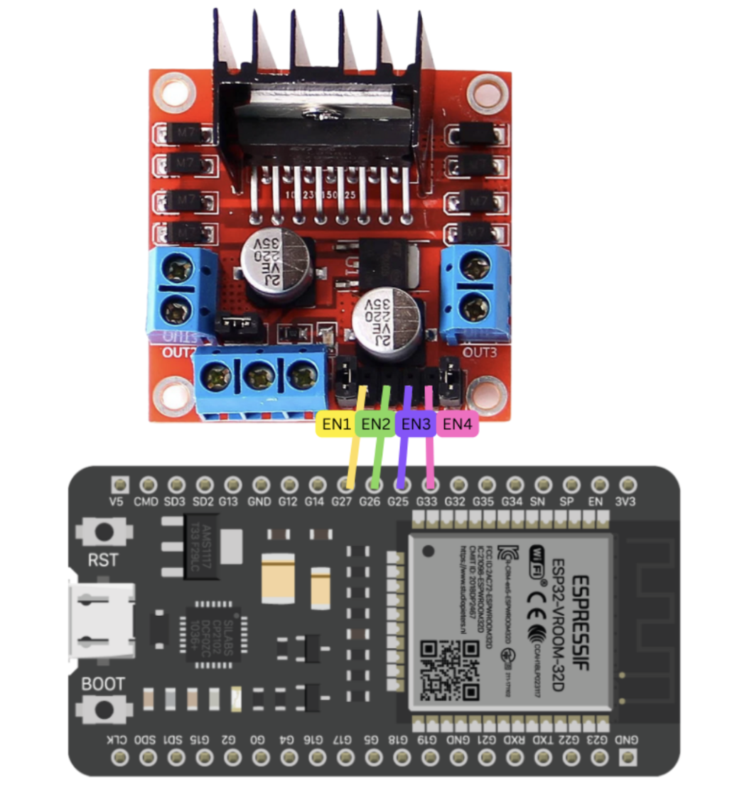
The motor driver has two direction control pins for each motor. The IN1 and IN2 pins control the spinning direction of motors A, while the IN3 and IN4 pins control the spinning direction of motors B.
By setting different combinations of HIGH or LOW signals on these pins, you can make the motors spin forward, backward, or stop.
| IN1, IN2 (Motors A) | IN3, IN4 (Motors B) |
|---|---|
|
|
PIN Connection Table
| L298N Pin | Connect to ESP32 | Functions |
|---|---|---|
| IN1 | D27 | Motor A Direction |
| IN2 | D26 | Motor A Direction |
| IN3 | D25 | Motor B Direction |
| IN4 | D33 | Motor B Direction |
| GND | GND | Common Ground |
2.0 ESP32
ESP32 is a powerful microcontroller used in robotics, IoT, and automation projects. It comes with:
- Dual-core processor (up to 240 MHz)
- WiFi + Bluetooth
- Multiple GPIO pins
- ADC (Analog inputs)
- PWM pins for motors/servos
- UART, I2C, SPI communication support
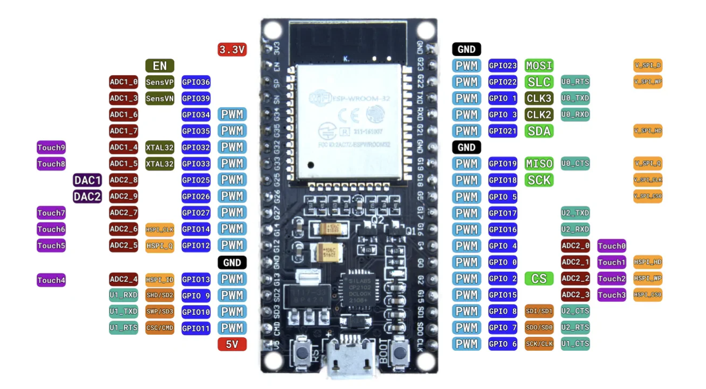
Power Pins
- 3.3V → Power sensors & logic
- 5V → Input from USB
- GND → Common ground
GPIO Pins
Flexible pins used for digital input/output.
ADC Pins (Analog Input)
- Pins 32, 33, 34, 35, 36, 39
PWM Pins (Servo/Motor Signal)
Almost all GPIOs support PWM
Best to use: GPIO 18, 19, 21, 22, 23, 25, 26, 27
UART Pins (Serial Communication)
- TX0/RX0 (default)
- Can remap to other GPIOs
2.1 Steps to Install Port Driver
Windows
Check Device Manager before downloading the driver. If you see the warning symbol, please download the driver, or else update it.
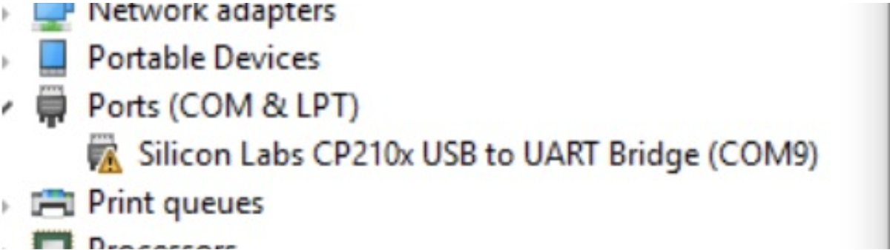
Driver Website: https://www.silabs.com/software-and-tools/usb-to-uart-bridge-vcp-drivers?tab=downloads
Step 1: Install the file from the provided Link
Step 2: Open Device Manager
Step 3: Right click on the warning and Update Driver
Step 4: Select Browse my computer for drivers
Step 5: Browse and select the downloaded ESP32 driver file as shown in the picture
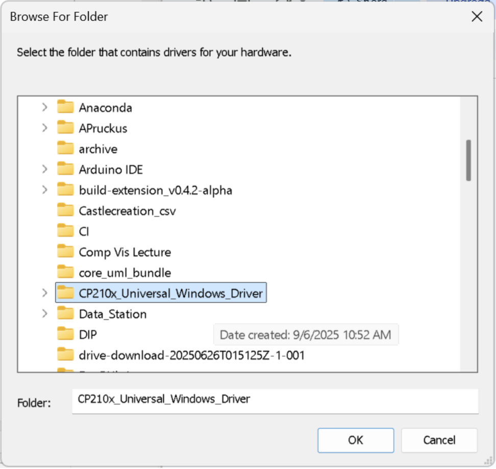
2.2 Steps to Connect ESP32 to Your Laptop
Step 1: Install Arduino IDE
Latest version recommended.
Step 2: Install ESP32 Boards
1 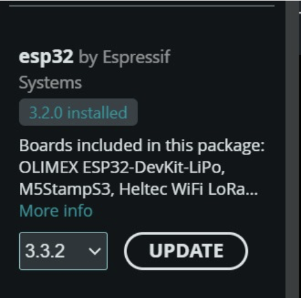 Download this under Board Manager |
2 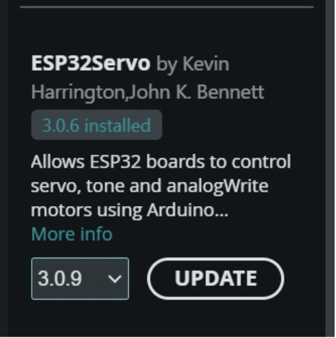 Download under Library |
Step 3: Debugging Process for Port Identification
Step 1
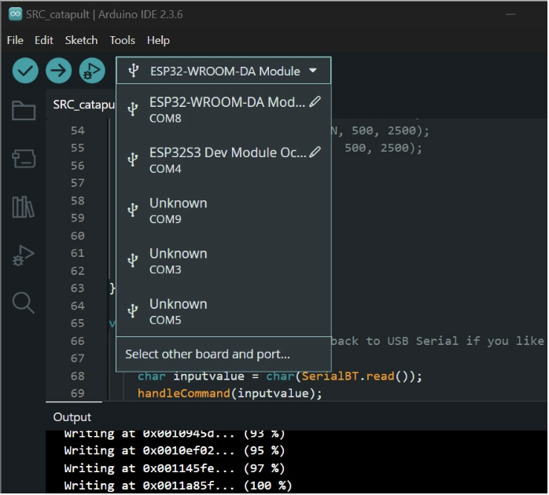
Step 2
Plug in ESP32 and observe the new popped up port
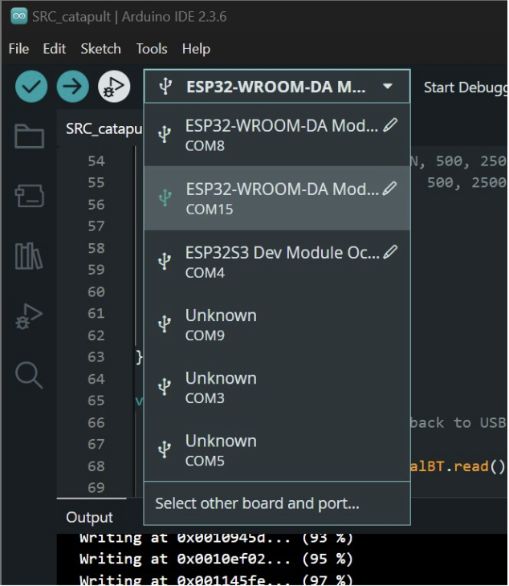
Step 3
Select the new port and click "Select other board and port...."
Then select ESP32-WROOM-DA-Module for the board.
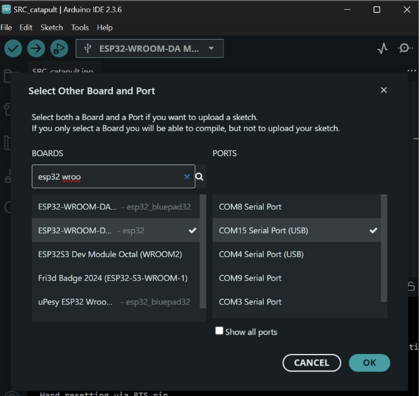
Step 4: First Test Program (Blink)
Paste this in Arduino IDE:
void setup() {
pinMode(2, OUTPUT);
}
void loop() {
digitalWrite(2, HIGH);
delay(1000);
digitalWrite(2, LOW);
delay(1000);
}
Upload → If the LED blinks → ESP32 is working perfectly.
Press and hold the BOOT button when you see the "Connecting" message. Let go when the terminal shows the "Writing (value) %" message.
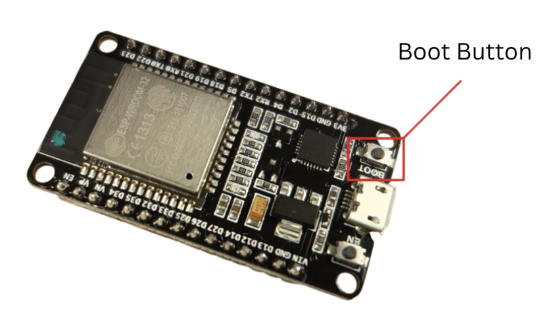
Step 5: Controlling the Robot Car
#include <BluetoothSerial.h>
BluetoothSerial SerialBT;
#define LED_PIN 2
#define IN1 33
#define IN2 25
#define IN3 26
#define IN4 27
void setup() {
SerialBT.begin("ESP32Bot"); // Change according to your team name to avoid duplicates
pinMode(LED_PIN, OUTPUT);
digitalWrite(LED_PIN, HIGH);
pinMode(IN1, OUTPUT);
pinMode(IN2, OUTPUT);
pinMode(IN3, OUTPUT);
pinMode(IN4, OUTPUT);
}
void loop() {
if (SerialBT.available()) {
char c = SerialBT.read();
handleCommand(c);
}
}
void handleCommand(char c) {
if (c == 'F') { // Forward
digitalWrite(IN1, HIGH);
digitalWrite(IN2, LOW);
digitalWrite(IN3, HIGH);
digitalWrite(IN4, LOW);
}
else if (c == 'B') { // Backward
digitalWrite(IN1, LOW);
digitalWrite(IN2, HIGH);
digitalWrite(IN3, LOW);
digitalWrite(IN4, HIGH);
}
else if (c == 'L') { // Left
digitalWrite(IN1, HIGH);
digitalWrite(IN2, LOW);
digitalWrite(IN3, LOW);
digitalWrite(IN4, LOW);
}
else if (c == 'R') { // Right
digitalWrite(IN1, LOW);
digitalWrite(IN2, LOW);
digitalWrite(IN3, HIGH);
digitalWrite(IN4, LOW);
}
else if (c == 'S') { // Stop
digitalWrite(IN1, LOW);
digitalWrite(IN2, LOW);
digitalWrite(IN3, LOW);
digitalWrite(IN4, LOW);
}
}
1) Required Libraries
#include <BluetoothSerial.h>
2) Bluetooth Object
BluetoothSerial SerialBT;
3) Pin Definitions
#define IN1 33
#define IN2 25
#define IN3 26
#define IN4 27
4) Setup Function
void setup() {
SerialBT.begin("ESP32Bot"); // Change according to your team name
pinMode(IN1, OUTPUT);
pinMode(IN2, OUTPUT);
pinMode(IN3, OUTPUT);
pinMode(IN4, OUTPUT);
// Start fully stopped
digitalWrite(IN1, LOW);
digitalWrite(IN2, LOW);
digitalWrite(IN3, LOW);
digitalWrite(IN4, LOW);
}
5) Helper Function
void handleCommand(char c) {
if (c == 'F') { // Forward
digitalWrite(IN1, HIGH);
digitalWrite(IN2, LOW);
digitalWrite(IN3, HIGH);
digitalWrite(IN4, LOW);
}
else if (c == 'B') { // Backward
digitalWrite(IN1, LOW);
digitalWrite(IN2, HIGH);
digitalWrite(IN3, LOW);
digitalWrite(IN4, HIGH);
}
else if (c == 'L') { // Left
digitalWrite(IN1, HIGH);
digitalWrite(IN2, LOW);
digitalWrite(IN3, LOW);
digitalWrite(IN4, LOW);
}
else if (c == 'R') { // Right
digitalWrite(IN1, LOW);
digitalWrite(IN2, LOW);
digitalWrite(IN3, HIGH);
digitalWrite(IN4, LOW);
}
else if (c == 'S') { // Stop
digitalWrite(IN1, LOW);
digitalWrite(IN2, LOW);
digitalWrite(IN3, LOW);
digitalWrite(IN4, LOW);
}
}
Step 6: Bluetooth
Downloading the Bluetooino App
Download the app from the Google Play Store
*Note: This app will only work with Android devices.
After Opening App: App Interface
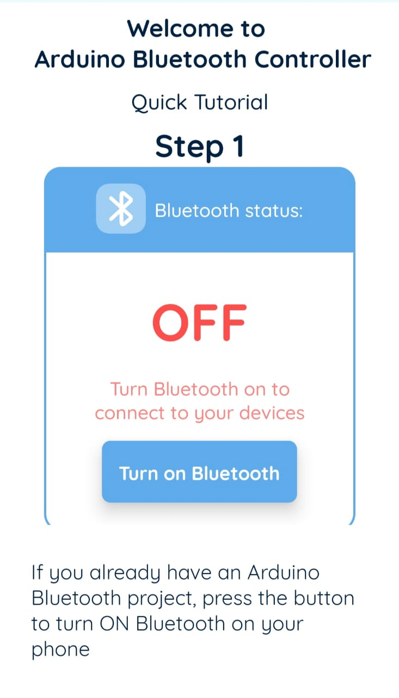 |
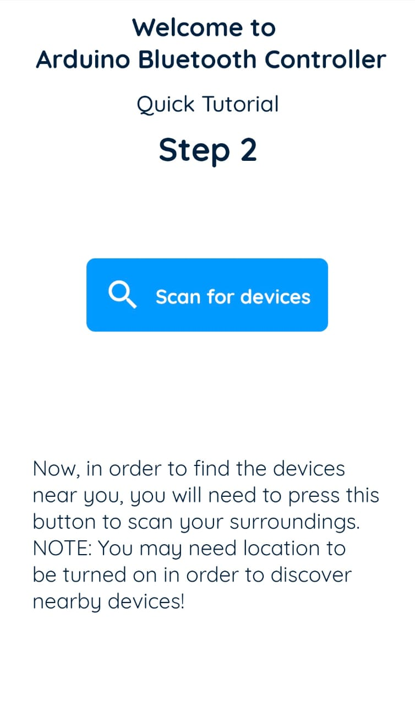 |
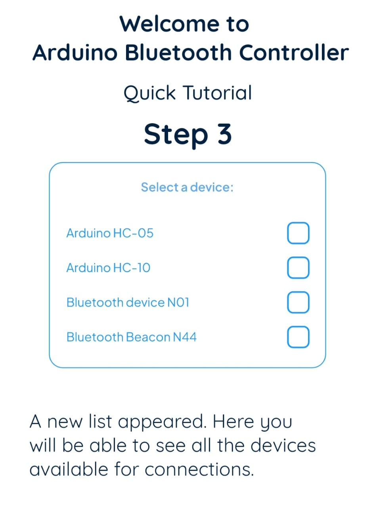 |
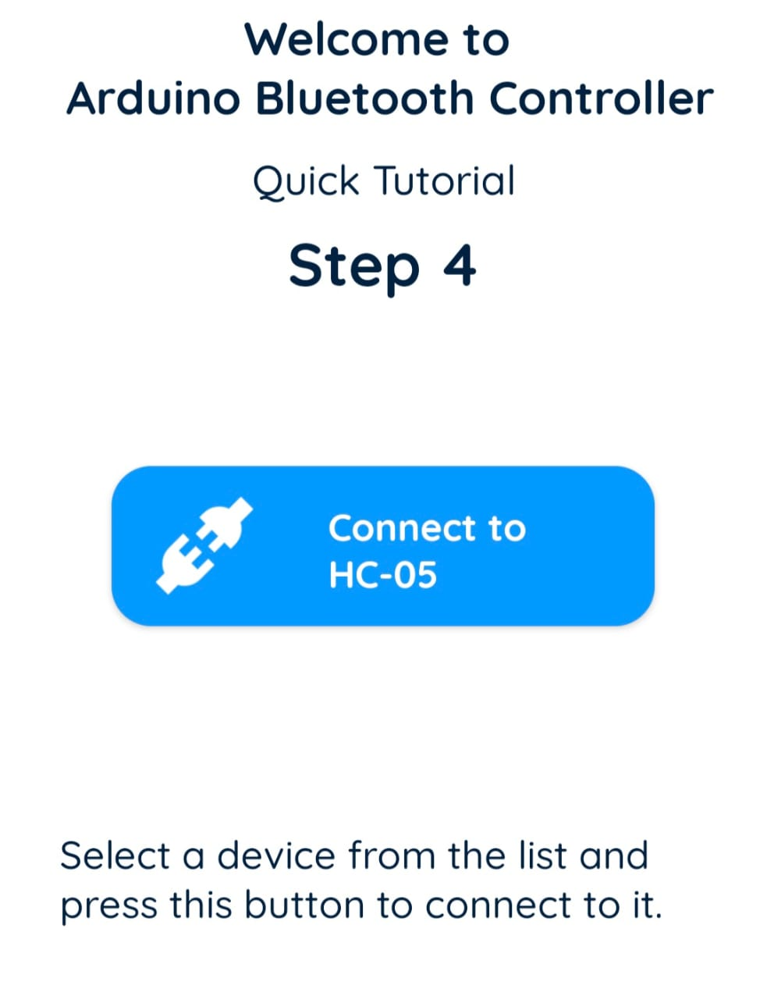 |
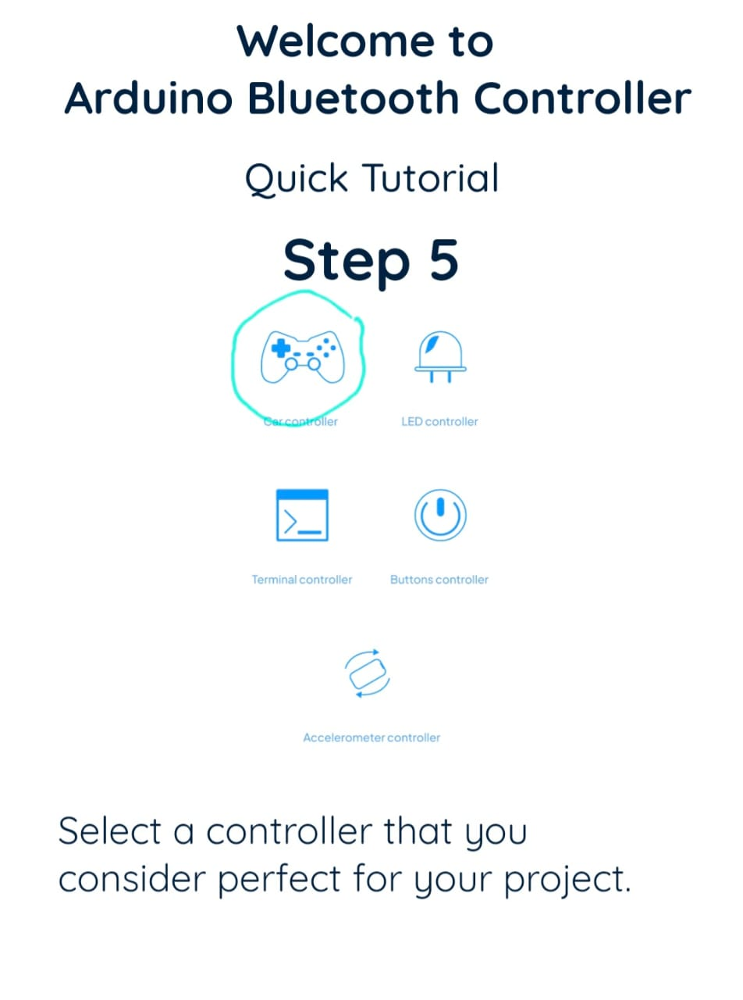 |
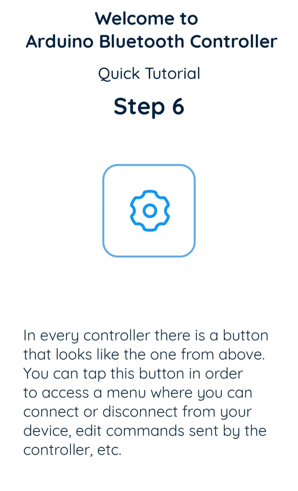 |
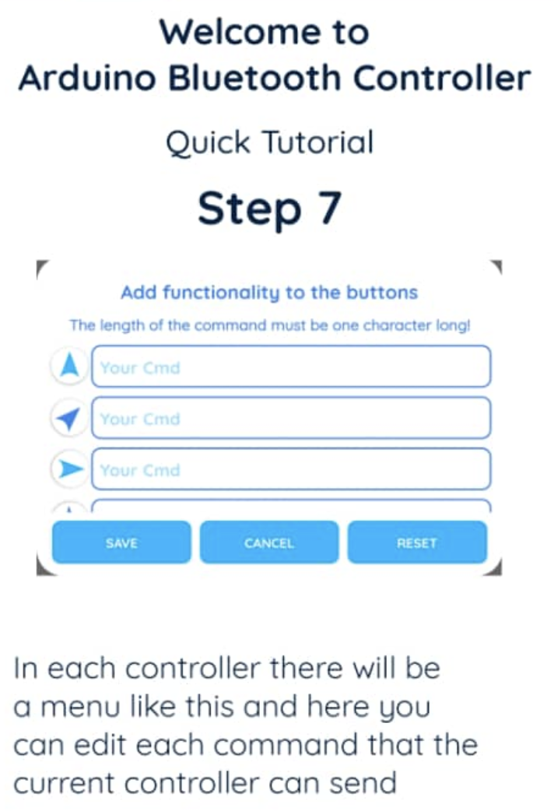 |
3.0 Servo Motor
3.1 What is a Servo Motor?
A servo motor is a rotary actuator that provides precise control over rotational position. In this competition, the servo motor is used to hold the catapult in place and release it for shooting.
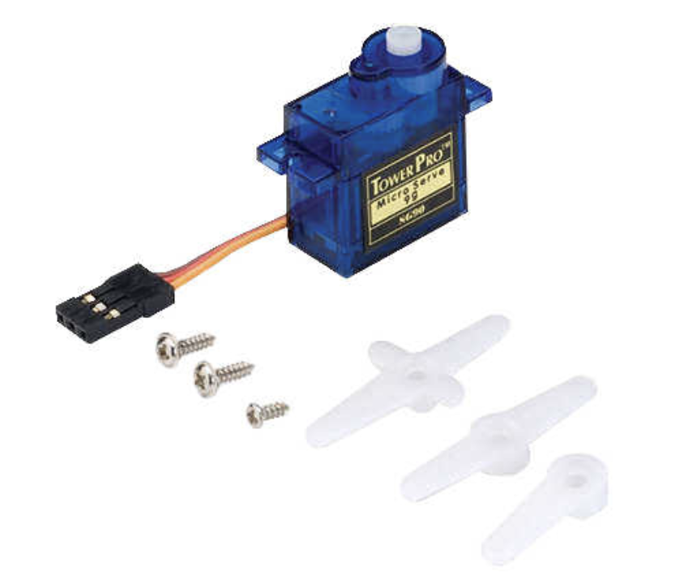
3.2 How Do We Control a Servo Motor
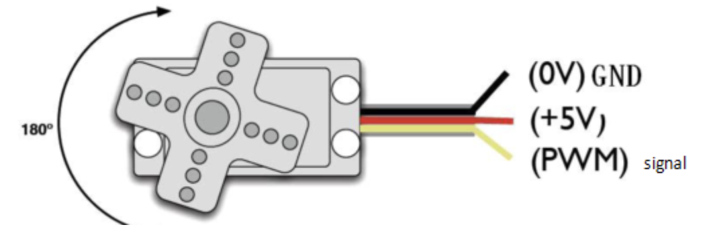
The position of the servo (angle) is controlled with the PWM signal.
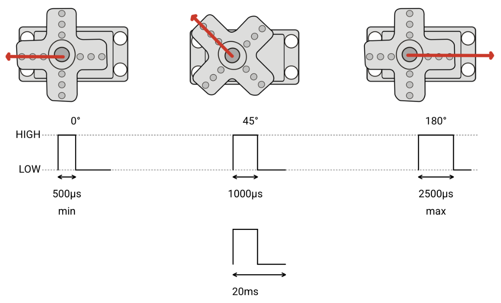
Connection of Servo to ESP32
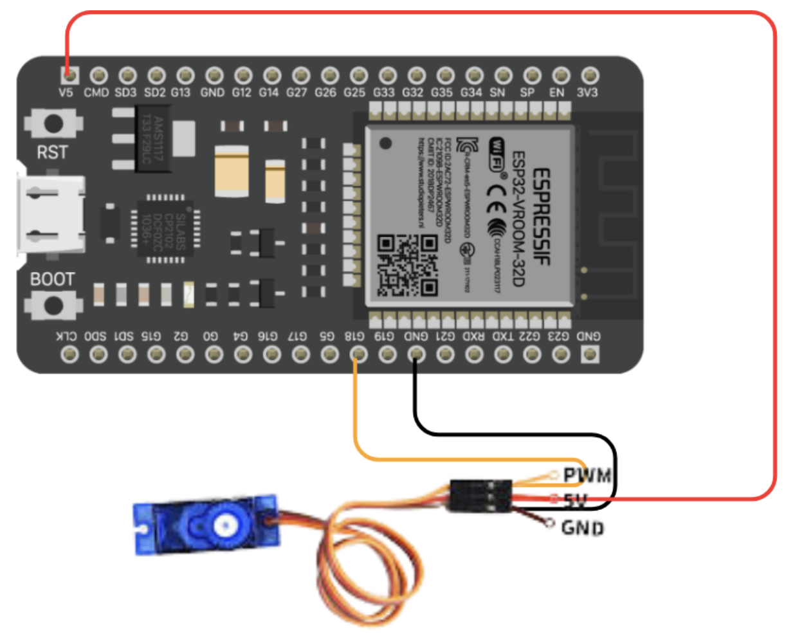
3.3 What is Servo Calibration?
Calibration ensures:
- Each servo starts at the correct zero (home) angle
- Movements are symmetrical
- All legs/arms/links start from the same mechanical reference
- This prevents mechanical binding and burnt gears.
Why do we calibrate?
- To avoid torque overload
- To ensure accurate rotation
- To protect expensive servos (especially MG996R, DS3218, etc.)
4.2.1 Servo Calibration Steps
Full Code:
#include <Servo.h>
#define SERVO_PIN 18
const int SERVO_MIN_ANGLE = 0;
const int SERVO_MAX_ANGLE = 180;
const int SERVO_CENTER = 90;
Servo myServo;
int offset = 0;
void moveToAngle(int angle) {
int correctedAngle = angle + offset;
if (correctedAngle < SERVO_MIN_ANGLE) correctedAngle = SERVO_MIN_ANGLE;
if (correctedAngle > SERVO_MAX_ANGLE) correctedAngle = SERVO_MAX_ANGLE;
myServo.write(correctedAngle);
delay(800);
}
void setup() {
Serial.begin(115200);
myServo.attach(SERVO_PIN);
Serial.println("Starting Servo Calibration...");
Serial.println("Centering Servo...");
moveToAngle(SERVO_CENTER);
}
void loop() {
Serial.println("Moving to 0 degrees...");
moveToAngle(0);
Serial.println("Moving to 90 degrees...");
moveToAngle(90);
Serial.println("Moving to 180 degrees...");
moveToAngle(180);
Serial.println("Returning to center...");
moveToAngle(90);
delay(1500);
}
1) Required Libraries
#include <Servo.h>
2) Pin Definitions
#define SERVO_PIN 18
3) Angle Conversion Constants
const int SERVO_MIN_ANGLE = 0;
const int SERVO_MAX_ANGLE = 180;
const int SERVO_CENTER = 90;
4) Global Variables
Servo myServo;
int offset = 0;
5) Calibration Helper Function
void moveToAngle(int angle) {
int correctedAngle = angle + offset;
if (correctedAngle < SERVO_MIN_ANGLE) correctedAngle = SERVO_MIN_ANGLE;
if (correctedAngle > SERVO_MAX_ANGLE) correctedAngle = SERVO_MAX_ANGLE;
myServo.write(correctedAngle);
delay(800);
}
6) Setup Function
void setup() {
Serial.begin(115200);
myServo.attach(SERVO_PIN);
Serial.println("Starting Servo Calibration...");
Serial.println("Centering Servo...");
moveToAngle(SERVO_CENTER);
}
7) Loop Function
void loop() {
moveToAngle(0);
moveToAngle(90);
moveToAngle(180);
moveToAngle(90);
delay(1500);
}